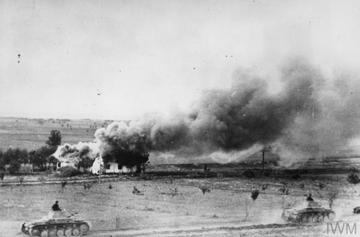

 Cuando estalló la Segunda Guerra Mundial, la potencia bélica de los bandos contendientes era prácticamente equivalente, a pesar de que Francia e Inglaterra habían comenzado más tarde su rearme. Cada uno de los aliados había desarrollado de forma distinta sus medios bélicos. Francia mejoró y desarrolló su sistema de trincheras (la famosa Línea Maginot, impulsada por el ministro de Guerra André Maginot), previendo una guerra de posiciones como en la Primera Guerra Mundial. La agresiva política expansionista de la Alemania nazi, dirigida a la revisión radical de la situación creada tras la Conferencia de París de 1919, contó con el apoyo de potencias totalitarias y expansionistas como Japón e Italia. La rápida derrota francesa dejó al Reino Unido sólo ante Hitler durante un corto período de tiempo. La entrada de la URSS y de los EE.UU. junto a los Aliados en 1941 desequilibró de forma definitiva la guerra a su favor. Una alianza "contra natura" de las grandes potencias democráticas y capitalistas y de la dictadura soviética puso fin a los afanes imperialistas de los sistemas fascistas y totalitarios.La poderosa marina británica no invirtió en la construcción de unidades que se convertirían en vitales (como el portaaviones), pero el país desarrolló ampliamente su fuerza aérea.
Europa perdió el poder global que conservaba de la guerra. Nació una "bipolaridad" del poder encarnado por dos superpotencias: E.E.U.U. y U.R.S.S. Algunas monarquías cedieron paso a regímenes republicanos: tales los casos de italia, yugoslavia, Albania, Rumania y Bulgaria. El "mundo comunista"extendió su influencia sobre Europa Oriental y los Balcanes. Se palnteó un nuevo conflicto ideológico: por un lado los cumistas y, por otro, las democracias occidentales. Nació la "era nuclear" y, paulatinamente, fue imponiéndose un nuevo "equilibrio del terror".La Naciones Unidas: un instrumento creado para servir la paz internacional.Las divergencias y los diferentes puntos de vista entre las naciones no impidieron buscar una fórmula de compromiso que analizara las relaciones entre los países. Cuando culminaba la guerra (ya próximas a ser derrotadas las potencias del Eje), los aliados determinaron integrar un organismo internacional para afianzar la paz y la colaboración entre las naciones.Esta nueva organización venía a reemplazar a la malograda Sociedad de las Naciones, surgida luego de la Primera Guerra Mundial. Las bases de esta entidad internacional se elaboraron en la Conferencia realizada en Dumbrton Oaks (E.E.U.U.) entre agosto y octubre de 1944 con la presencia de delegados.
 |  |